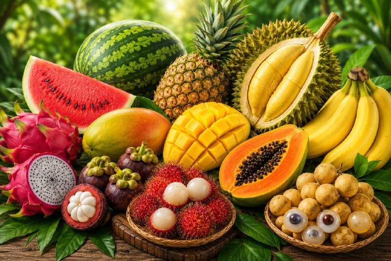

LOCAL FRUITS

🍍 Introduction 🍍
Malaysia is a tropical country blessed with warm weather, abundant rainfall, and fertile soil, making it an ideal place for growing a wide variety of fruits. Malaysian local fruits have been cultivated for generations and are an important part of the country's agriculture, culture, and daily life. These fruits are enjoyed fresh, used in traditional dishes, and sold locally as well as exported to other countries.
🥭 Interesting Facts 🥭
- Malaysia is home to many famous tropical fruits such as durian, mangosteen, rambutan, mango, pineapple, papaya and dragon fruit.
- Local fruits are rich in vitamins, minerals, and antioxidants that help maintain good health.
- Fruit festivals and seasonal fruit markets are popular attractions for both locals and tourists.
- Many Malaysian fruits grow naturally in the tropical climate without needing special growing conditions.
🍌 Importance 🍌
Local fruits contribute significantly to Malaysia's economy through farming, trade, and tourism. They also provide a source of income for many farmers across the country. In addition, local fruits promote healthy eating habits and showcase Malaysia's rich agricultural heritage.
🍉 Conclusion 🍉
Malaysian local fruits are not only delicious and nutritious but also represent the country's natural wealth and cultural identity. Their unique flavours, colours, and varieties make them an important part of Malaysia's food culture and a source of pride for the nation.